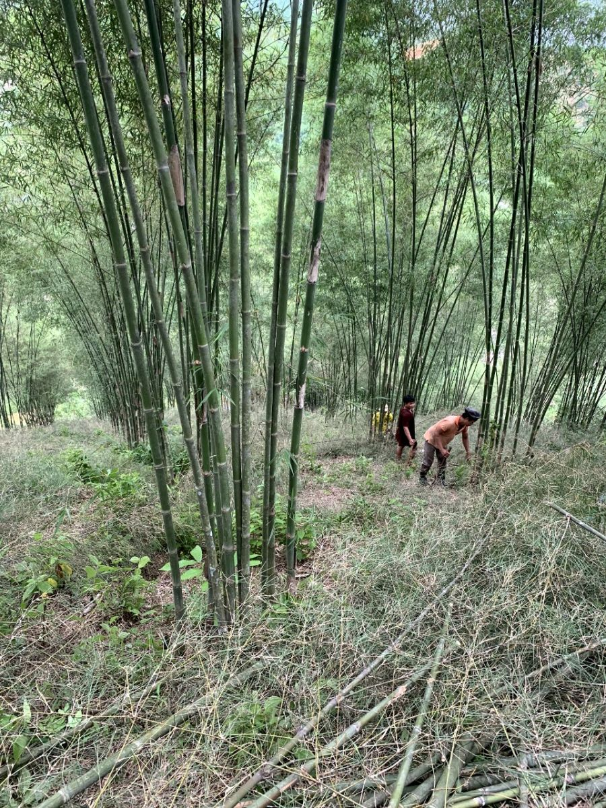
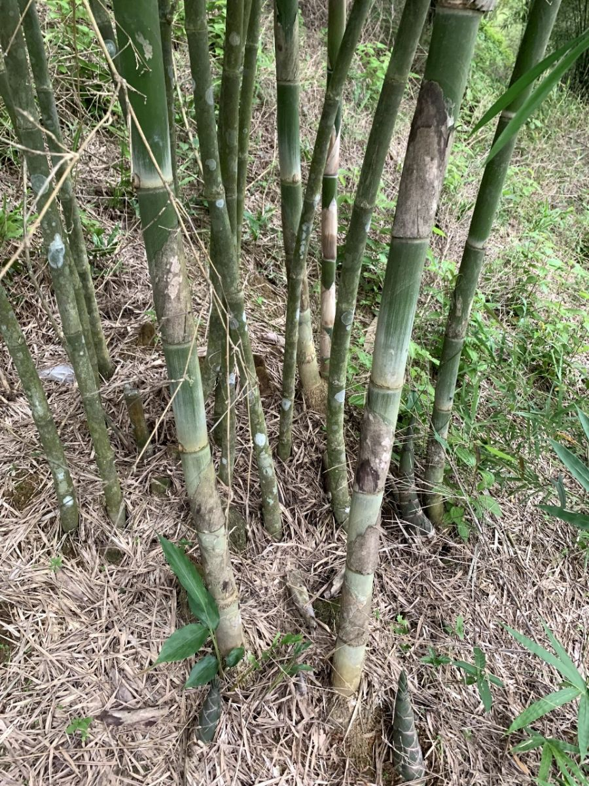

Cây tầm vông được sử dụng khi thiết kế kiến trúc xanh, vì nguyên liệu tầm vông có giá thành tương đối rẻ, đây cũng là nguyên liệu 100% tự nhiên, an toàn cho sức khỏe người dùng và thân thiện với môi trường. Vậy địa chỉ cung cấp cây tầm vông giá rẻ hiện nay? Hãy cùng tìm hiểu ngay sau đây nhé.
Cây tre tầm vông
Cây tầm vông có pháp danh là: Thyrsostachys siamensis, một cây thuộc họ tre (Bambusoideae). Cây tầm vông hiện nay được phân bố từ Thái Lan và Myanmar đến miền nam Việt Nam.
Tre Việt Building – Đơn vị chuyên cung cấp cây tầm vông, cây tre gai, cây lồ ô…Quý khách có nhu cầu mua nguyên liệu cây tầm vông hãy liên hệ ngay chúng tôi để được tư vấn hỗ trợ nhé.

Ứng dụng của cây tre tầm vông
Điểm nổi bật của tre tầm vông là độ cứng, cây có độ bền và khả năng chịu lực rất tốt. Cây tầm vông là một trong những nguyên liệu dồi dào và có nhiều trong tự nhiên nên giá thành của tre rất phải chăng và hợp lý.
Vậy nên tre được sử dụng rộng rãi trong đời sống hàng ngày điển hình như:
– Đồ thủ công, bàn ghế, thang tre, đồ gia dụng.
– Gỗ tre cũng được sử dụng để trang trí nhà tre, nhà hàng, quán cà phê, khu nghỉ dưỡng…Nó cũng được xuất khẩu sang nhiều nước trên thế giới.
– Dùng cây tre tầm vông để thi công nhà tre, vách ốp, trần nhà bằng măng tre.
– Dùng để làm giàn cho các loại rau leo giàn khác nhau.
Là nguyên liệu chính để sản xuất giấy.
Cây tre tầm vông còn cho ra măng non và dùng để chế biến thành nhiều món ăn ngon cho bữa cơm gia đình.
Chủng loại cây tre tầm vông
Hiện tại, tre tầm vông được nhân giống như các cây tre khác. Những giống cây tầm vông được trồng nhiều nhất trong những năm trở lại đây là:
– Cây tre tầm vông 3m, cây này có độ dài tối thiểu 3m, đường kính gốc 25 đến 35mm.
– Tre tầm vông 4m, cây dài tối thiểu 4m, và đường kính gốc 35 đến 45mm.
– Cây tre tầm vông 6m: Cây dài tối thiểu 6m, đường kính gốc 40 – 60mm.
– Tre tầm vông 7m: Cây dài tối thiểu 7m, đường kính gốc 49 – 60mm.
– Tre tầm vông 9m: Cây dài tối thiểu là 9m, có đường kính gốc từ 55 đến 65mm.
– Ngọn tầm vông hay còn gọi là Đọt tầm vông: Cây dài tối thiểu 2m -2.5m, đường kính gốc 20 – 25mm.
Quy trình khai thác và xử lý cây tre tầm vông
Tiêu chuẩn khai thác cây tre tầm vông
Tiêu chuẩn khai thác cây tầm vông tại Tre Việt Building như sau:
– Phân loại nhóm cây: Phân loại theo độ tuổi khai thác và theo phương pháp cây gốc (cây bố mẹ) – cây con.
– Độ tuổi khai thác: Ít nhát là cây được trồng 5 năm (Ngoại trừ những cây cắt tỉa)
– Đường kính gốc : Đường kính gốc cây phổ biến từ 35 – 45mm và 45mm – 65mm.
– Thời điểm khai thác cây: Nên khai thác tập trung vào mùa khô từ tháng 11 năm trước tới tháng 8 năm sau. Cắt tỉa cần được thực hiện điều.
Cách xử lý cây tầm vông tại Tre Việt Building
– Cây tre tầm vông thô: Cây sẽ được làm sạch cành, nhánh, mắt, rửa sạch và cắt ngọn – gốc
– Cây tầm vông đã qua xử lý : Được uốn thẳng, cũng như xử lý mối mọt và phơi khô tự nhiên từ 20 – 30 ngày
– Đọt cây tre tầm vông được làm sạch cành và bó thành từng bó khoảng 15 đến 20 cây/bó
Sản phẩm cây tre tầm vông đầu ra
Tre Việt Building nhận gia cây tre tầm vông theo yêu cầu đặt hàng tùy theo nhu cầu khách hàng chúng tôi sẽ đáp ứng theo đơn hàng cụ thể như sau:
– Chiều dài kích thước
– Đường kính gốc hoặc đường kính ngọn
– Độ ẩm
– Màu sắc
– Quy cách đóng gói,…
Kích thước cây tầm vông phổ biến hiện nay là:
– Cây tâm vông có chiều dài 4m: Đường kính gốc 35 – 45 mm và 45 – 55 mm
– Cây 3m: đường kính gốc 28-35mm
– Cây 2.5m: Đường kính gốc 28-35mm
– Cây 2m: đường kính gốc 28-35mm
Bảng giá cây tầm vông
Bảng giá cây tầm vông hiện nay giao động khoảng 20.000 VNĐ đến 60.000 VNĐ/ ây.
Giá thành cây tầm vông sẽ khác biệt khi kích thước, độ dài, màu sắc cây tầm vông khác nhau, bảng giá cây tre tầm vông như sau:
Phân loại cây tầm vông | Đơn giá |
Cây tầm vông dài 2m, đường kính từ 2 – 3 cm | Từ 20.000 – 24.000 VNĐ |
Cây tầm vông dài 2,5m, đường kính từ 2.5 – 3cm | Từ 20.000 – 25.000 VNĐ |
Cây tầm vông dài 3m, đường kính từ 2.5 – 3cm | Từ 25.000 – 30.000 VNĐ |
Cây tầm vông dài 4m, đường kính từ 2.5 – 4cm | Từ 40.000 – 60.000 VNĐ |
Để nhận bảng giá cây tre tầm vông chính xác quý khách vui lòng liên hệ.
CÔNG TY TRÁCH NHIỆM HỮU HẠN TRE VIỆT BUILDING
Địa chỉ: 917 Phạm Văn Đồng, Phường Linh Xuân, Thành phố Hồ Chí Minh
Nhà máy sản xuất: Phú Hợp B, Xã Phú Lâm, Đồng Nai.
Website: tretruc.com.vn
Điện thoại – Zalo: 093.123.5757
Email: info@treviet.com.vn – treviet23@gmail.com